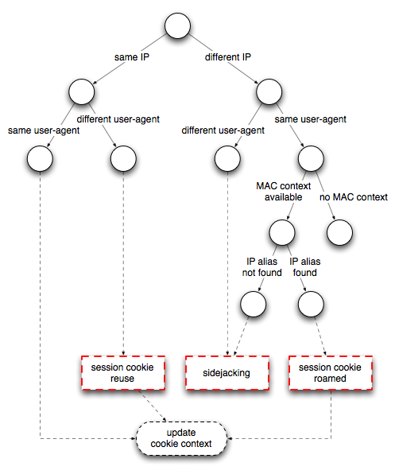

Better NIDS Performance by Tracking Roaming Users
Firesheep had a noticeable impact on several large Web 2.0 players: Twitter, FaceBook, GitHub, Dropbox, Slicehost, and others now offer either opt-in HTTPS or have switched to a full HTTPS deployment in order to protect their users from session hijacking attacks. In an earlier article I described how to write a Bro script that passively detects Firesheep. In this article, I discuss how tracking roaming users in DHCP-enabled networks can improve the false positive rate of network intrusion detection system (NIDS) detectors of this kind.
Passive Detection
Passive monitoring is less intrusive than active approaches, such as the Blacksheep Firefox extension which sends fake cookies and looks whether a Firesheep user tries to utilize them, or the FireShepherd command-line utility which simply floods the network with zillions of fake cookies with the goal to crash Firesheep (and thereby the browser). In general, such active “defense” mechanisms do not scale to larger networks and may have even undesirable side-effects in affecting their users. Therefore, I believe that purely passive detection mechanisms are more attractive in practice.
However, false positives are an issue with the passive sidejacking detector. If a network uses DHCP, chances are that the same user receives a different IP addresses at some point in time. But when the sidejacking detector has not yet expired the cookie value associated with the old IP address and the cookie reappears under a new IP address, a false alarm is generated. This happens due to the lack of a crisp user definition: IP address are ephemeral in DHCP networks and cannot be used to analyze user activity over time without taking roaming into account.
Reducing False Positives
How should we ? The key insight is to keep track of all IP addresses under which the same user appears, where a user is uniquely identified by its MAC address. You might think that this is obvious, so why not always use MAC addresses? For small coffeeshop networks, this would probably work just fine: a typical deployment has a single broadcast domain and the NIDS can be part of it. However, the issue is with larger networks, partitioned into several broadcast domains, where traffic from access points is aggregated over a hierarchy of switches. In such scenarios, the NIDS might not even see the MAC addresses of the users because it is deployed upstream (usually at the border or DMZ).
With Bro, it is possible to simply ship the missing layer-2 information to the machine on which the detector runs. This works in monitoring infrastructures consisting of network-wide sensors (or worker nodes) which can see and forward link-layer events to a central manager nodes that runs the scripts processing the events. Our NIDS cluster paper has more details on this architecture.
Assuming that we can see the relevant broadcast traffic, how do we learn IP-to-MAC mappings of roaming users?
-
Clearly, we can learn IP-to-MAC mappings by monitoring DHCP traffic. In particular, the DHCP ACKs contain the binding between the two addresses, as discussed in the previous sidejacking article.
-
I was pleased when Jordi Ros-Giralt from Reservoir Labs sent me a patch that incorporates another type of broadcast traffic: ARP. Similar to DHCP ACKs, ARP replies also contain the mapping from IP to MAC address.
Bro’s new roam.bro script keeps track of these mappings in two
global tables:
global ip_to_mac: table[addr] of string
&read_expire = alias_expiration &synchronized;
global mac_to_ip: table[string] of set[addr]
&read_expire = alias_expiration &synchronized;
Event handlers for the dhcp_ack and arp_reply events populate these tables.
For example, here is the DHCP ACK handler:
event DHCP::dhcp_ack(c: connection, msg: dhcp_msg, mask: addr,
router: dhcp_router_list, lease: interval, serv_addr: addr)
{
local ip = msg$yiaddr;
local mac = msg$h_addr;
if (ip !in ip_to_mac)
ip_to_mac[ip] = mac;
if (mac !in mac_to_ip)
mac_to_ip[mac] = set() &mergeable;
add mac_to_ip[mac][ip];
}
One note for cluster users: the &synchronized attribute makes sure that these
tables have the same content across all nodes in a cluster. The &mergeable
attribute ensures that the address sets of the table mac_to_ip are correctly
synchronized. That is, the local sets of the worker nodes are merged at the
manager. You can think of it conceptually as creating the union of all sets
instead of just using the value of the last update that would override previous
updates. See our NIDS cluster paper for more details about these
attributes. At this point I should mention that I factored the roaming logic
into a separate Bro script roam.bro so that other scripts can also make use
of the provided data structures.
Jordi’s patch also includes a new type of
Notice,
SessionCookieRoamed, which is generated when the same MAC address reappears
under a different IP address. The Figure below shows the updated decision tree
of the sidejacking detector; red rectangles correspond to a Notice and round
nodes represent a decision.

The latest version of the detector and the roaming script are available from the Bro scripts git repository.
Summary
This article describes how to reduce false positives of network-based detectors that base their notion of accountability on IP addresses. I show how flexible cross-layer NIDS, like Bro, can make such detectors more robust by incorporating link-layer context (i.e., MAC addresses). Although the running example is sidejacking, this improvement works in all scenarios where IP-level state is kept across TCP connections.
Load Comments